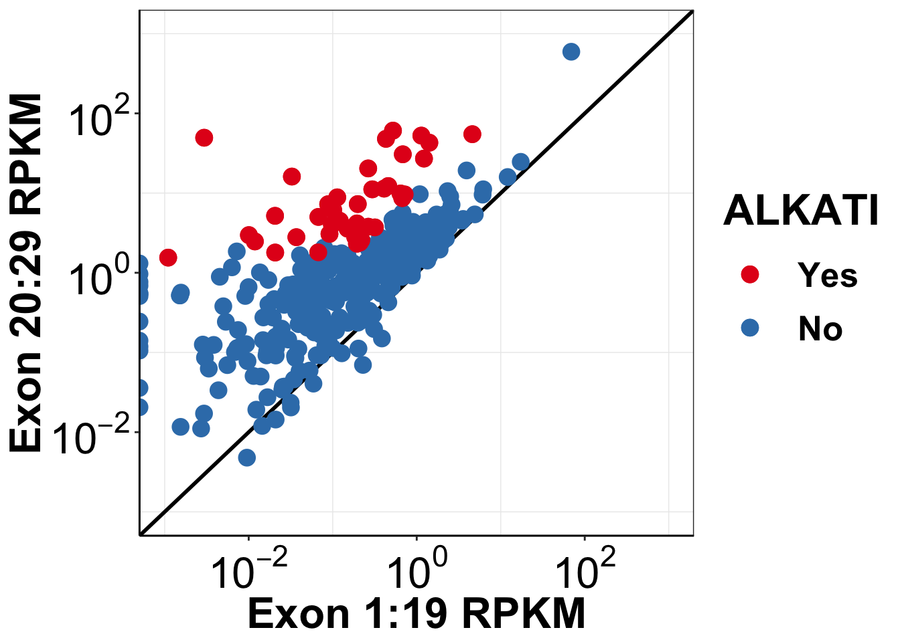

Last updated: 2019-02-19
workflowr checks: (Click a bullet for more information) ✔ R Markdown file: up-to-date
Great! Since the R Markdown file has been committed to the Git repository, you know the exact version of the code that produced these results.
✔ Environment: empty
Great job! The global environment was empty. Objects defined in the global environment can affect the analysis in your R Markdown file in unknown ways. For reproduciblity it’s best to always run the code in an empty environment.
✔ Seed:
set.seed(20190211)
The command set.seed(20190211) was run prior to running the code in the R Markdown file. Setting a seed ensures that any results that rely on randomness, e.g. subsampling or permutations, are reproducible.
✔ Session information: recorded
Great job! Recording the operating system, R version, and package versions is critical for reproducibility.
✔ Repository version: ba899cb
wflow_publish or wflow_git_commit). workflowr only checks the R Markdown file, but you know if there are other scripts or data files that it depends on. Below is the status of the Git repository when the results were generated:
Ignored files:
Ignored: .Rhistory
Ignored: .Rproj.user/
Untracked files:
Untracked: code/alldata_compiler.R
Untracked: code/contab_maker.R
Untracked: code/mut_excl_genes_datapoints.R
Untracked: code/mut_excl_genes_generator.R
Untracked: code/quadratic_solver.R
Untracked: code/simresults_generator.R
Untracked: code/tcga_skcm_data_parser.Rmd
Untracked: data/All_Data_V2.csv
Untracked: data/all_data.csv
Untracked: data/tcga_alk_expression/
Untracked: docs/figure/ALKATI_Filter_Cutoff_Analysis.Rmd/
Untracked: docs/figure/Filteranalysis.Rmd/
Untracked: filteranalysisheatmap.pdf
Untracked: output/alkati_filtercutoff_allfilters.csv
Untracked: output/alkati_mtn_pval_fig2B.pdf
Untracked: output/alkati_skcm_exonimbalance.pdf
Untracked: output/skcm_alk_exon_expression.csv
library(knitr)
library(tictoc)
library(workflowr)This is workflowr version 1.1.1
Run ?workflowr for help getting startedlibrary(VennDiagram)Loading required package: gridLoading required package: futile.loggerlibrary(dplyr)
Attaching package: 'dplyr'The following objects are masked from 'package:stats':
filter, lagThe following objects are masked from 'package:base':
intersect, setdiff, setequal, unionlibrary(foreach)
library(doParallel)Loading required package: iteratorsLoading required package: parallellibrary(ggplot2)
library(reshape2)
library(RColorBrewer)
library(devtools)
library(ggsignif)
source("code/contab_maker.R")
source("code/alldata_compiler.R")
source("code/quadratic_solver.R")
source("code/mut_excl_genes_generator.R")
source("code/mut_excl_genes_datapoints.R")
source("code/simresults_generator.R")
######################Cleanup for GGPlot2#########################################
cleanup=theme_bw() +
theme(plot.title = element_text(hjust=.5),
panel.grid.major = element_blank(),
panel.grid.major.y = element_blank(),
panel.background = element_blank(),
axis.line = element_line(color = "black"))Making ALK Expression the plots:
alkati_merged_data=read.csv("data/all_data.csv")
alkati_merged_data$alkati=0
alkati_merged_data$alkati[alkati_merged_data$Ratio>=10&alkati_merged_data$mRNA_count>=500&alkati_merged_data$RSEM_normalized>=100]=1
alkati_merged_data$alkati=factor(alkati_merged_data$alkati,levels=c("1","0"))
ggplot(alkati_merged_data,aes(x=mean_RPKM_1.19, y=mean_RPKM_20.29,color=factor(alkati)))+
geom_abline(size=1)+
geom_point(size=4)+
####Had to add this line to not overplot the alkati datapoint- Haider 1/31/19
geom_point(data=alkati_merged_data[alkati_merged_data$alkati==1,],aes(x=mean_RPKM_1.19, y=mean_RPKM_20.29,color=factor(alkati)),size=4)+
scale_x_continuous(trans = "log10",name="Exon 1:19 RPKM",breaks=c(1e-2,1e0,1e2),labels = parse(text = c("10^-2","10^0","10^2")),limits = c(1e-3,1e3))+
scale_y_continuous(trans = "log10",name="Exon 20:29 RPKM",breaks=c(1e-2,1e0,1e2),labels = parse(text = c("10^-2","10^0","10^2")),limits = c(1e-3,1e3))+
scale_color_brewer(palette="Set1",name="ALKATI",labels=c("Yes", "No"))+
cleanup+
theme(plot.title = element_text(hjust=.5),
text = element_text(size=24,face = "bold"),
axis.title = element_text(face="bold",size="24"),
axis.text=element_text(face="bold",size="24",colour = "black"))+
theme(legend.key.size = unit(30,"pt"))Warning: Transformation introduced infinite values in continuous x-axisWarning: Removed 2 rows containing missing values (geom_point).
| Version | Author | Date |
|---|---|---|
| dfdb600 | haiderinam | 2019-02-17 |
# ggsave("output/alkati_skcm_exonimbalance.pdf",width =12 ,height =10 ,units = "in",useDingbats=F)
#Testing if both kinase and ALK expression are different
ks.test(alkati_merged_data$mean_RPKM_1.19,alkati_merged_data$mean_RPKM_20.29)Warning in ks.test(alkati_merged_data$mean_RPKM_1.19,
alkati_merged_data$mean_RPKM_20.29): p-value will be approximate in the
presence of ties
Two-sample Kolmogorov-Smirnov test
data: alkati_merged_data$mean_RPKM_1.19 and alkati_merged_data$mean_RPKM_20.29
D = 0.40456, p-value < 2.2e-16
alternative hypothesis: two-sided###We observed a significant difference between the distribution for the 20-29 exons and the 1-19 exons The reported p-value was 2-16.sessionInfo()R version 3.5.2 (2018-12-20)
Platform: x86_64-apple-darwin15.6.0 (64-bit)
Running under: macOS Mojave 10.14.3
Matrix products: default
BLAS: /Library/Frameworks/R.framework/Versions/3.5/Resources/lib/libRblas.0.dylib
LAPACK: /Library/Frameworks/R.framework/Versions/3.5/Resources/lib/libRlapack.dylib
locale:
[1] en_US.UTF-8/en_US.UTF-8/en_US.UTF-8/C/en_US.UTF-8/en_US.UTF-8
attached base packages:
[1] parallel grid stats graphics grDevices utils datasets
[8] methods base
other attached packages:
[1] ggsignif_0.4.0 usethis_1.4.0 devtools_2.0.1
[4] RColorBrewer_1.1-2 reshape2_1.4.3 ggplot2_3.1.0
[7] doParallel_1.0.14 iterators_1.0.10 foreach_1.4.4
[10] dplyr_0.7.8 VennDiagram_1.6.20 futile.logger_1.4.3
[13] workflowr_1.1.1 tictoc_1.0 knitr_1.21
loaded via a namespace (and not attached):
[1] tidyselect_0.2.5 xfun_0.4 remotes_2.0.2
[4] purrr_0.3.0 colorspace_1.4-0 htmltools_0.3.6
[7] yaml_2.2.0 rlang_0.3.1 pkgbuild_1.0.2
[10] R.oo_1.22.0 pillar_1.3.1 glue_1.3.0
[13] withr_2.1.2 R.utils_2.7.0 sessioninfo_1.1.1
[16] lambda.r_1.2.3 bindrcpp_0.2.2 bindr_0.1.1
[19] plyr_1.8.4 stringr_1.3.1 munsell_0.5.0
[22] gtable_0.2.0 R.methodsS3_1.7.1 codetools_0.2-16
[25] evaluate_0.12 memoise_1.1.0 callr_3.1.1
[28] ps_1.3.0 Rcpp_1.0.0 backports_1.1.3
[31] scales_1.0.0 formatR_1.5 desc_1.2.0
[34] pkgload_1.0.2 fs_1.2.6 digest_0.6.18
[37] stringi_1.2.4 processx_3.2.1 rprojroot_1.3-2
[40] cli_1.0.1 tools_3.5.2 magrittr_1.5
[43] lazyeval_0.2.1 tibble_2.0.1 futile.options_1.0.1
[46] crayon_1.3.4 whisker_0.3-2 pkgconfig_2.0.2
[49] prettyunits_1.0.2 assertthat_0.2.0 rmarkdown_1.11
[52] rstudioapi_0.9.0 R6_2.3.0 git2r_0.24.0
[55] compiler_3.5.2 This reproducible R Markdown analysis was created with workflowr 1.1.1